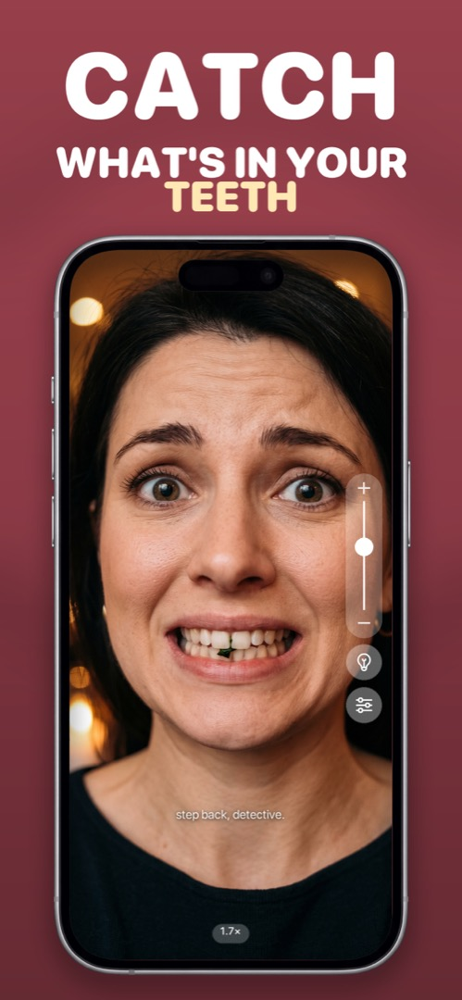

A Mirror App With Zoom for Eyebrows, Teeth, Contacts and Tiny Details
A normal mirror shows you at life size, which is fine for hair and useless for anything small. Makeup mirrors solve it with 5× or 10× magnification — and your iPhone can do the same thing, without you carrying another object around.
What zoom on a phone mirror actually is
The front camera has a single fixed lens, so zoom in a mirror app is digital: the app crops the centre of the image and scales it up. That's exactly what you want for a mirror — you're not printing this, you're looking at it — but it has two practical limits:
- Light: the more you zoom, the more grain shows. Good front light (or a built-in screen light) matters more at 3× than at 1×.
- Steadiness: at high zoom every wobble is magnified. Rest your elbow on something, or prop the phone up.
In practice, 1.5–2.5× covers almost everything: brows, lashes, a contact lens going in, a spot, the gap between your front teeth after a salad.
When magnification earns its keep
- Tweezing — you can see individual hairs against skin.
- Contact lenses — checking the lens is seated and not inside-out.
- Teeth — poppy seeds and spinach hide at 1×.
- Eye makeup — liner symmetry, mascara clumps.
- Skin — with the caveat that at 3× everyone's pores look dramatic. Don't panic.
How to do it in Mirrorly
Mirrorly has a zoom slider on screen and pinch-to-zoom. To use it:
- Open Mirrorly and find what you want to look at in the full-screen mirror.
- Drag the vertical slider on the right, or pinch the screen, to zoom. The current magnification (for example 1.7×) shows at the bottom.
- If it's grainy, tap the light-bulb — the screen edges light your face and the image cleans up.
- Steady the phone against a surface for anything above 2×.

Mirrorly is free on the App Store. A full-screen iPhone mirror with a built-in light, zoom and maximum brightness. No photos saved, no account, no ads.